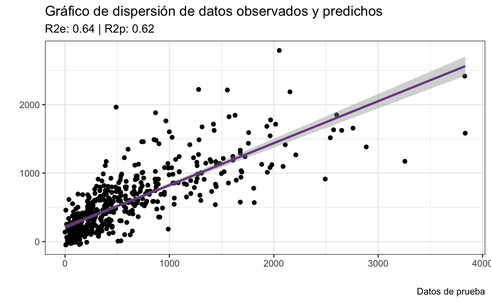

# Tema personalizado
blank_theme <- function(aspect.ratio = 1/1.61){
theme(panel.grid.minor = element_blank(),
panel.grid.major = element_blank(),
panel.background = element_blank(),
axis.line = element_blank(),
aspect.ratio = aspect.ratio,
axis.ticks = element_blank(),
text = element_text(colour = "gray50"), # Eliminar
legend.position = "none"
)
}
Para esta sección utilizaremos los datos de la base crime.csv. El objetivo será predecir la tasa de crimenes/poblacion a partir de otras 88 variables:
La variable que nos interesa predecir es el la columna ViolentCrimesPerPop). Apliquemos un modelo de regresión lineal múltiple incluyendo todas las variables, sin dividir los datos en entrenamiento-prueba y sin escalarlos. Tampoco filtraremos los datos para evitar una fuga de información:
population householdsize agePct12t21 agePct12t29 agePct16t24 agePct65up
1 11980 3.10 12.47 21.44 10.93 11.33
2 23123 2.82 11.01 21.30 10.48 17.18
3 29344 2.43 11.36 25.88 11.01 10.28
4 16656 2.40 12.55 25.20 12.19 17.57
5 140494 2.45 18.09 32.89 20.04 13.26
6 28700 2.60 11.17 27.41 12.76 14.42
numbUrban pctUrban medIncome pctWWage pctWFarmSelf pctWInvInc pctWSocSec
1 11980 100 75122 89.24 1.55 70.20 23.62
2 23123 100 47917 78.99 1.11 64.11 35.50
3 29344 100 35669 82.00 1.15 55.73 22.25
4 0 0 20580 68.15 0.24 38.95 39.48
5 140494 100 21577 75.78 1.00 41.15 29.31
6 28700 100 42805 79.47 0.39 47.70 30.23
pctWPubAsst pctWRetire medFamInc perCapInc NumUnderPov PctPopUnderPov
1 1.03 18.39 79584 29711 227 1.96
2 2.75 22.85 55323 20148 885 3.98
3 2.94 14.56 42112 16946 1389 4.75
4 11.71 18.33 26501 10810 2831 17.23
5 7.12 14.09 27705 11878 23223 17.78
6 5.41 17.23 50394 18193 1126 4.01
PctLess9thGrade PctNotHSGrad PctBSorMore PctUnemployed PctEmploy PctEmplManu
1 5.81 9.90 48.18 2.70 64.55 14.65
2 5.61 13.72 29.89 2.43 61.96 12.26
3 2.80 9.09 30.13 4.01 69.80 15.95
4 11.05 33.68 10.81 9.86 54.74 31.22
5 8.76 23.03 20.66 5.72 59.02 14.31
6 4.49 13.89 27.01 4.85 65.42 14.02
PctEmplProfServ PctOccupManu PctOccupMgmtProf MalePctDivorce MalePctNevMarr
1 28.82 5.49 50.73 3.67 26.38
2 29.28 6.39 37.64 4.23 27.99
3 21.52 8.79 32.48 10.10 25.78
4 27.43 26.76 22.71 10.98 28.15
5 26.83 14.72 23.42 11.40 33.32
6 27.17 8.50 32.78 5.97 36.05
FemalePctDiv TotalPctDiv PersPerFam PctFam2Par PctKids2Par PctYoungKids2Par
1 5.22 4.47 3.22 91.43 90.17 95.78
2 6.45 5.42 3.11 86.91 85.33 96.82
3 14.76 12.55 2.95 78.54 78.85 92.37
4 14.47 12.91 2.98 64.02 62.36 65.38
5 14.46 13.04 2.89 71.94 69.79 79.76
6 9.06 7.64 3.14 79.53 79.76 92.05
PctTeen2Par PctWorkMomYoungKids PctWorkMom NumKidsBornNeverMar
1 95.81 44.56 58.88 31
2 86.46 51.14 62.43 43
3 75.72 66.08 74.19 164
4 67.43 59.59 70.27 561
5 75.33 62.96 70.52 1511
6 77.12 65.16 72.81 263
PctKidsBornNeverMar NumImmig PctImmigRecent PctImmigRec5 PctImmigRec8
1 0.36 1277 8.69 13.00 20.99
2 0.24 1920 5.21 8.65 13.33
3 0.88 1468 16.42 23.98 32.08
4 3.84 339 13.86 13.86 15.34
5 1.58 2091 21.33 30.56 38.02
6 1.18 2637 11.38 16.27 23.93
PctImmigRec10 PctRecentImmig PctRecImmig5 PctRecImmig8 PctRecImmig10
1 30.93 0.93 1.39 2.24 3.30
2 22.50 0.43 0.72 1.11 1.87
3 35.63 0.82 1.20 1.61 1.78
4 15.34 0.28 0.28 0.31 0.31
5 45.48 0.32 0.45 0.57 0.68
6 27.76 1.05 1.49 2.20 2.55
PctSpeakEnglOnly PctNotSpeakEnglWell PctLargHouseFam PctLargHouseOccup
1 85.68 1.37 4.81 4.17
2 87.79 1.81 4.25 3.34
3 93.11 1.14 2.97 2.05
4 94.98 0.56 3.93 2.56
5 96.87 0.60 3.08 1.92
6 89.98 0.60 5.08 3.46
PersPerOccupHous PersPerOwnOccHous PersPerRentOccHous PctPersOwnOccup
1 2.99 3.00 2.84 91.46
2 2.70 2.83 1.96 89.03
3 2.42 2.69 2.06 64.18
4 2.37 2.51 2.20 58.18
5 2.28 2.37 2.16 57.81
6 2.55 2.89 2.09 64.62
PctPersDenseHous PctHousLess3BR MedNumBR HousVacant PctHousOccup
1 0.39 11.06 3 64 98.37
2 1.01 23.60 3 240 97.15
3 2.03 47.46 3 544 95.68
4 1.21 45.66 3 669 91.19
5 2.11 53.19 2 5119 91.81
6 1.47 47.35 3 566 95.11
PctHousOwnOcc PctVacantBoarded PctVacMore6Mos MedYrHousBuilt PctHousNoPhone
1 91.01 3.12 37.50 1959 0.00
2 84.88 0.00 18.33 1958 0.31
3 57.79 0.92 7.54 1976 1.55
4 54.89 2.54 57.85 1939 7.00
5 55.50 2.09 26.22 1966 6.13
6 56.96 1.41 34.45 1956 0.69
PctWOFullPlumb OwnOccLowQuart OwnOccMedVal OwnOccHiQuart OwnOccQrange
1 0.28 215900 262600 326900 111000
2 0.14 136300 164200 199900 63600
3 0.12 74700 90400 112000 37300
4 0.87 36400 49600 66500 30100
5 0.31 37700 53900 73100 35400
6 0.28 155100 179000 215500 60400
RentLowQ RentMedian RentHighQ RentQrange MedRent MedRentPctHousInc
1 685 1001 1001 316 1001 23.8
2 467 560 672 205 627 27.6
3 370 428 520 150 484 24.1
4 195 250 309 114 333 28.7
5 215 280 349 134 340 26.4
6 463 669 824 361 736 24.4
MedOwnCostPctInc MedOwnCostPctIncNoMtg NumInShelters NumStreet PctForeignBorn
1 21.1 14.0 11 0 10.66
2 20.7 12.5 0 0 8.30
3 21.7 11.6 16 0 5.00
4 20.6 14.5 0 0 2.04
5 17.3 11.7 327 4 1.49
6 20.8 12.5 0 0 9.19
PctBornSameState PctSameHouse85 PctSameCity85 PctSameState85
1 53.72 65.29 78.09 89.14
2 77.17 71.27 90.22 96.12
3 44.77 36.60 61.26 82.85
4 88.71 56.70 90.17 96.24
5 64.35 42.29 70.61 85.66
6 77.30 63.45 82.23 93.53
ViolentCrimesPerPop
1 41.02
2 127.56
3 218.59
4 306.64
5 442.95
6 226.63
Call:
lm(formula = ViolentCrimesPerPop ~ ., data = dr.df)
Residuals:
Min 1Q Median 3Q Max
-1776.25 -184.04 -36.85 126.83 2194.09
Coefficients: (2 not defined because of singularities)
Estimate Std. Error t value Pr(>|t|)
(Intercept) -1.195e+03 3.295e+03 -0.363 0.716842
population 2.324e-04 2.049e-03 0.113 0.909703
householdsize -7.569e+01 1.161e+02 -0.652 0.514556
agePct12t21 8.262e+00 1.279e+01 0.646 0.518346
agePct12t29 -3.394e+01 1.265e+01 -2.684 0.007344 **
agePct16t24 1.250e+01 1.832e+01 0.682 0.495175
agePct65up -1.119e+01 1.094e+01 -1.023 0.306440
numbUrban -7.223e-04 2.023e-03 -0.357 0.721118
pctUrban 1.245e+00 4.790e-01 2.598 0.009436 **
medIncome -1.430e-02 7.156e-03 -1.998 0.045806 *
pctWWage -9.557e+00 5.869e+00 -1.628 0.103596
pctWFarmSelf 2.328e+01 1.577e+01 1.476 0.139992
pctWInvInc -6.764e+00 2.495e+00 -2.711 0.006771 **
pctWSocSec 7.969e+00 5.907e+00 1.349 0.177469
pctWPubAsst 7.796e+00 5.838e+00 1.336 0.181861
pctWRetire -9.214e+00 3.761e+00 -2.450 0.014395 *
medFamInc 9.378e-03 6.899e-03 1.359 0.174165
perCapInc 8.988e-04 7.623e-03 0.118 0.906152
NumUnderPov 2.705e-05 2.451e-03 0.011 0.991196
PctPopUnderPov -6.144e+00 4.830e+00 -1.272 0.203515
PctLess9thGrade -1.551e+01 6.320e+00 -2.454 0.014224 *
PctNotHSGrad 5.368e+00 4.856e+00 1.105 0.269148
PctBSorMore 2.611e+00 3.528e+00 0.740 0.459310
PctUnemployed -1.734e+00 8.005e+00 -0.217 0.828581
PctEmploy 9.473e+00 4.809e+00 1.970 0.048991 *
PctEmplManu -3.843e+00 2.133e+00 -1.802 0.071766 .
PctEmplProfServ -3.164e-01 2.939e+00 -0.108 0.914297
PctOccupManu 1.303e+00 4.631e+00 0.281 0.778521
PctOccupMgmtProf 5.127e+00 4.664e+00 1.099 0.271738
MalePctDivorce 1.522e+02 6.854e+01 2.220 0.026545 *
MalePctNevMarr 8.419e+00 4.851e+00 1.735 0.082826 .
FemalePctDiv 9.881e+01 7.178e+01 1.376 0.168838
TotalPctDiv -2.388e+02 1.391e+02 -1.717 0.086211 .
PersPerFam -1.409e+02 3.512e+02 -0.401 0.688213
PctFam2Par 1.025e+01 8.784e+00 1.167 0.243302
PctKids2Par -2.718e+01 6.971e+00 -3.899 9.99e-05 ***
PctYoungKids2Par 2.794e+00 2.394e+00 1.167 0.243347
PctTeen2Par 3.471e-01 2.206e+00 0.157 0.874962
PctWorkMomYoungKids 3.659e+00 2.772e+00 1.320 0.186938
PctWorkMom -9.343e+00 4.011e+00 -2.330 0.019934 *
NumKidsBornNeverMar -5.637e-03 4.186e-03 -1.347 0.178236
PctKidsBornNeverMar 5.992e+01 9.252e+00 6.476 1.19e-10 ***
NumImmig 1.029e-03 6.746e-04 1.525 0.127400
PctImmigRecent 2.153e+00 2.427e+00 0.887 0.375132
PctImmigRec5 -7.823e-01 3.071e+00 -0.255 0.798944
PctImmigRec8 -1.118e+00 3.000e+00 -0.373 0.709366
PctImmigRec10 1.574e+00 1.941e+00 0.811 0.417541
PctRecentImmig -1.221e+01 4.962e+01 -0.246 0.805635
PctRecImmig5 -2.038e+01 6.021e+01 -0.339 0.734999
PctRecImmig8 1.590e+01 5.660e+01 0.281 0.778799
PctRecImmig10 -1.628e+01 3.339e+01 -0.487 0.626032
PctSpeakEnglOnly 1.257e+00 2.282e+00 0.551 0.581825
PctNotSpeakEnglWell -2.051e+01 9.371e+00 -2.189 0.028740 *
PctLargHouseFam 1.952e+01 3.179e+01 0.614 0.539258
PctLargHouseOccup -4.263e+01 3.462e+01 -1.232 0.218279
PersPerOccupHous 4.037e+02 4.203e+02 0.960 0.336949
PersPerOwnOccHous 3.591e+02 2.801e+02 1.282 0.199951
PersPerRentOccHous -3.337e+02 1.157e+02 -2.883 0.003981 **
PctPersOwnOccup -4.662e+01 1.710e+01 -2.726 0.006470 **
PctPersDenseHous 2.175e+01 6.714e+00 3.240 0.001216 **
PctHousLess3BR 2.723e+00 2.058e+00 1.323 0.185976
MedNumBR 3.528e+01 2.662e+01 1.325 0.185226
HousVacant 2.096e-02 6.107e-03 3.432 0.000611 ***
PctHousOccup -1.933e+00 2.654e+00 -0.728 0.466650
PctHousOwnOcc 4.273e+01 1.714e+01 2.493 0.012761 *
PctVacantBoarded 1.413e+01 3.611e+00 3.914 9.41e-05 ***
PctVacMore6Mos -2.027e+00 9.147e-01 -2.216 0.026785 *
MedYrHousBuilt 1.840e+00 1.559e+00 1.180 0.238222
PctHousNoPhone 2.863e+00 5.658e+00 0.506 0.612853
PctWOFullPlumb -5.755e+00 2.581e+01 -0.223 0.823578
OwnOccLowQuart 5.157e-05 1.316e-03 0.039 0.968733
OwnOccMedVal 2.811e-04 1.555e-03 0.181 0.856587
OwnOccHiQuart -6.922e-04 6.662e-04 -1.039 0.298916
OwnOccQrange NA NA NA NA
RentLowQ -6.198e-01 2.612e-01 -2.373 0.017732 *
RentMedian -2.455e-01 4.906e-01 -0.500 0.616889
RentHighQ -2.857e-01 2.836e-01 -1.008 0.313822
RentQrange NA NA NA NA
MedRent 1.192e+00 4.267e-01 2.792 0.005285 **
MedRentPctHousInc -2.590e+00 5.227e+00 -0.496 0.620222
MedOwnCostPctInc -1.100e+00 5.934e+00 -0.185 0.852896
MedOwnCostPctIncNoMtg -2.819e+01 8.839e+00 -3.189 0.001450 **
NumInShelters 7.886e-02 5.928e-02 1.330 0.183602
NumStreet -3.028e-02 1.427e-01 -0.212 0.832056
PctForeignBorn 1.934e+01 6.651e+00 2.908 0.003681 **
PctBornSameState 8.863e-01 1.353e+00 0.655 0.512569
PctSameHouse85 1.302e+00 2.646e+00 0.492 0.622713
PctSameCity85 1.212e+00 1.995e+00 0.607 0.543621
PctSameState85 -2.109e+00 3.135e+00 -0.673 0.501232
---
Signif. codes: 0 '***' 0.001 '**' 0.01 '*' 0.05 '.' 0.1 ' ' 1
Residual standard error: 363 on 1907 degrees of freedom
Multiple R-squared: 0.6665, Adjusted R-squared: 0.6514
F-statistic: 44.31 on 86 and 1907 DF, p-value: < 2.2e-16summary(dr.df$RentQrange)
Min. 1st Qu. Median Mean 3rd Qu. Max.
0.0 139.0 173.0 200.3 241.0 803.0 Veamos qué pasa ahora si aplicamos este mismo modelo realizando la división entrenamiento-prueba.
Para realizar la división utilizaremos la función sample.split() de librería caTools:
Ajustemos el modelo de entrenamiento:
[1] 67.85562Evaluemos el desempeño en los datos de prueba.
pred <- predict.lm(train.dr.lm, test[,1:88])
R2(pred, test$ViolentCrimesPerPop)*100
[1] 60.2964De estos resultados vemos que el modelo está sobreajustado, ya que el \(R^2\) del modelo de prueba menor al de entrenamiento. Tomando esto en consideración, 1) escalemos los datos y b) apliquemos los modelos regularizados.
Para hacer las cosas más organizadas, primero dividamos ambos sets de datos en dos objetos: uno con las variables independientes y otro con la variable dependiente:
X_train <- train[,1:88]
y_train <- train$ViolentCrimesPerPop
X_test <- test[,1:88]
y_test <- test$ViolentCrimesPerPop
Ahora estandaricemos las variables dependientes:
preProc <- preProcess(X_train, method = c("center", "scale"))
X_train_s <- predict(preProc, X_train)
X_test_s <- predict(preProc, X_test)
Apliquemos la regresión al set de entrenamiento. Debido a que el valor de penalización (\(\alpha\) en la clase, \(\lambda\) en glmnet) es “arbitrario”, podemos utilizar validación cruzada para encontrar el valor que mejor se ajuste a nuestros datos. La validación cruzada consiste en hacer k particiones entrenamiento-prueba de los datos, ajustar un modelo para cada k para cada valor del parámetro que sea de nuestro interés, promediar el valor de error de cada iteración y quedarnos con el valor del parámetro que haya logrado el menor valor de nuestra medida de error. En la librería glmnet esto se hace con la función cv.glmnet, la cual recibe como argumentos una matriz de variables independientes, un vector con variables dependientes, un valor de alpha que será 0 para regresión Ridge, 1 para Lasso y algún intermedio para red elástica (no la veremos en el curso) y el tipo de medida de error, en este caso MSE.
library(glmnet)
cv.ridge <- cv.glmnet(as.matrix(X_train_s), y_train, alpha = 0, type.measure = "mse")
# Valor de lambda que otorga el menor valor de error
lambdamin <- cv.ridge$lambda.min
lambdamin
[1] 127.2735Ajustemos entonces el modelo regularizado con ese valor de lambda. (Df representa el número de coeficientes no negativos, \(\%Dev = R^2\)).
Call: glmnet(x = as.matrix(X_train_s), y = y_train, alpha = 0, lambda = lambdamin)
Df %Dev Lambda
1 88 64.37 127.3coef(ridge.lm) # Imprime los coeficientes de la regresión
89 x 1 sparse Matrix of class "dgCMatrix"
s0
(Intercept) 594.3309632
population 1.9300180
householdsize 1.8299619
agePct12t21 -7.3486939
agePct12t29 -31.9576114
agePct16t24 -13.7190597
agePct65up -0.7500937
numbUrban 2.9093075
pctUrban 48.9548756
medIncome 4.4813095
pctWWage -13.4939524
pctWFarmSelf -2.5372388
pctWInvInc -39.4099456
pctWSocSec 5.7726094
pctWPubAsst 8.2557445
pctWRetire -31.5772883
medFamInc 0.1869270
perCapInc 7.2125911
NumUnderPov 1.3516081
PctPopUnderPov 1.6304773
PctLess9thGrade -24.2107288
PctNotHSGrad 23.9205978
PctBSorMore -4.7951480
PctUnemployed -4.4677466
PctEmploy -0.6736613
PctEmplManu -25.2037054
PctEmplProfServ -0.9096683
PctOccupManu 1.2909056
PctOccupMgmtProf 6.1034532
MalePctDivorce 39.3996963
MalePctNevMarr 24.5249604
FemalePctDiv -5.6875449
TotalPctDiv 12.4548611
PersPerFam 13.1410156
PctFam2Par -54.0844979
PctKids2Par -76.7466711
PctYoungKids2Par -22.7957248
PctTeen2Par -31.7585992
PctWorkMomYoungKids 10.6242815
PctWorkMom -29.0347493
NumKidsBornNeverMar 10.5416166
PctKidsBornNeverMar 142.4105435
NumImmig -19.0071427
PctImmigRecent 5.4033013
PctImmigRec5 -7.4524167
PctImmigRec8 2.4384854
PctImmigRec10 11.0250579
PctRecentImmig -4.3029127
PctRecImmig5 -1.6401076
PctRecImmig8 8.0026637
PctRecImmig10 14.7662164
PctSpeakEnglOnly 24.9056068
PctNotSpeakEnglWell -21.4562027
PctLargHouseFam 9.3206986
PctLargHouseOccup -3.4064885
PersPerOccupHous 12.3918690
PersPerOwnOccHous -8.3730487
PersPerRentOccHous 8.5386052
PctPersOwnOccup -10.1687491
PctPersDenseHous 36.0367459
PctHousLess3BR 8.7490050
MedNumBR -3.0382968
HousVacant 39.6081968
PctHousOccup -16.0266762
PctHousOwnOcc 4.3255442
PctVacantBoarded 48.6961138
PctVacMore6Mos -13.2650164
MedYrHousBuilt 14.3259260
PctHousNoPhone 17.6682547
PctWOFullPlumb 1.1437346
OwnOccLowQuart -3.6714089
OwnOccMedVal -1.3201613
OwnOccHiQuart -0.5468553
OwnOccQrange 4.7164888
RentLowQ -15.2916481
RentMedian 0.9769829
RentHighQ 0.1358997
RentQrange 25.8023901
MedRent 15.3168827
MedRentPctHousInc 12.2762392
MedOwnCostPctInc 3.8327009
MedOwnCostPctIncNoMtg -31.6350261
NumInShelters 13.7891862
NumStreet -8.1076432
PctForeignBorn 25.5580343
PctBornSameState -15.0924908
PctSameHouse85 20.2263294
PctSameCity85 10.5844297
PctSameState85 -3.4981307Vemos que el valor de R2 es ligeramente menor al caso anterior; sin embargo, ganamos un poco de poder predictivo en el modelo de prueba:
Veamos cómo afecta el valor de lambda:
for (lambda in c(0, 0.5, 1, 2, 3, 5, 10, 20, 50, round(lambdamin,2))) {
ridge.lm <- glmnet(as.matrix(X_train_s), y_train, alpha = 0,
lambda = lambda, standardize = F,
standardize.response = F)
ridge.pred <- predict(ridge.lm, as.matrix(X_test_s))
print(paste("lambda = ", lambda,
"; Variables restantes:", round(ridge.lm$df, 2),
"; R^2 entrenamiento = ", round(ridge.lm$dev.ratio,2),
"; R^2 prueba = ", round(R2(ridge.pred, y_test),2)))
}
[1] "lambda = 0 ; Variables restantes: 88 ; R^2 entrenamiento = 0.68 ; R^2 prueba = 0.6"
[1] "lambda = 0.5 ; Variables restantes: 88 ; R^2 entrenamiento = 0.68 ; R^2 prueba = 0.61"
[1] "lambda = 1 ; Variables restantes: 88 ; R^2 entrenamiento = 0.68 ; R^2 prueba = 0.61"
[1] "lambda = 2 ; Variables restantes: 88 ; R^2 entrenamiento = 0.67 ; R^2 prueba = 0.61"
[1] "lambda = 3 ; Variables restantes: 88 ; R^2 entrenamiento = 0.67 ; R^2 prueba = 0.62"
[1] "lambda = 5 ; Variables restantes: 88 ; R^2 entrenamiento = 0.67 ; R^2 prueba = 0.62"
[1] "lambda = 10 ; Variables restantes: 88 ; R^2 entrenamiento = 0.67 ; R^2 prueba = 0.62"
[1] "lambda = 20 ; Variables restantes: 88 ; R^2 entrenamiento = 0.66 ; R^2 prueba = 0.62"
[1] "lambda = 50 ; Variables restantes: 88 ; R^2 entrenamiento = 0.66 ; R^2 prueba = 0.63"
[1] "lambda = 127.27 ; Variables restantes: 88 ; R^2 entrenamiento = 0.64 ; R^2 prueba = 0.63"Vemos que sí hay diferencias con respecto al primer caso. Apliquemos la regresión Lasso:
cv.lasso <- cv.glmnet(as.matrix(X_train_s),
y_train, alpha = 1,
type.measure = "mse")
# Valor de lambda que otorga el menor valor de error
lambdamin <- cv.lasso$lambda.min
lambdamin
[1] 11.0696Ajustemos entonces el modelo regularizado con ese valor de lambda. (Df representa el número de coeficientes no cero, \(\%Dev = R^2\)).
Call: glmnet(x = as.matrix(X_train_s), y = y_train, alpha = 1, ambda = lambdamin)
Df %Dev Lambda
1 0 0.00 457.40
2 1 9.31 416.80
3 2 17.05 379.70
4 2 23.93 346.00
5 2 29.65 315.30
6 2 34.39 287.30
7 2 38.33 261.70
8 2 41.59 238.50
9 2 44.31 217.30
10 2 46.56 198.00
11 2 48.43 180.40
12 2 49.99 164.40
13 2 51.28 149.80
14 2 52.35 136.50
15 2 53.23 124.30
16 3 54.00 113.30
17 4 55.01 103.20
18 4 55.86 94.06
19 6 56.60 85.71
20 6 57.39 78.09
21 6 58.06 71.16
22 8 58.69 64.83
23 7 59.35 59.08
24 8 59.91 53.83
25 8 60.42 49.05
26 10 60.88 44.69
27 11 61.27 40.72
28 11 61.63 37.10
29 11 61.93 33.80
30 13 62.19 30.80
31 13 62.46 28.07
32 15 62.74 25.57
33 15 63.00 23.30
34 16 63.22 21.23
35 16 63.40 19.34
36 18 63.62 17.63
37 18 63.82 16.06
38 18 63.98 14.63
39 18 64.11 13.33
40 18 64.22 12.15
41 18 64.32 11.07
42 19 64.39 10.09
43 19 64.46 9.19
44 21 64.52 8.37
45 22 64.59 7.63
46 23 64.67 6.95
47 23 64.74 6.33
48 26 64.84 5.77
49 26 64.95 5.26
50 28 65.05 4.79
51 30 65.17 4.37
52 31 65.30 3.98
53 32 65.42 3.62
54 33 65.52 3.30
55 36 65.61 3.01
56 36 65.70 2.74
57 39 65.79 2.50
58 46 65.90 2.28
59 47 66.09 2.07
60 49 66.22 1.89
61 51 66.36 1.72
62 51 66.47 1.57
63 54 66.57 1.43
64 57 66.68 1.30
65 59 66.76 1.19
66 59 66.84 1.08
67 60 66.91 0.99
68 61 66.96 0.90
69 64 67.02 0.82
70 66 67.08 0.75
71 70 67.14 0.68
72 71 67.18 0.62
73 72 67.25 0.56
74 75 67.31 0.51
75 75 67.36 0.47
76 76 67.41 0.43
77 77 67.44 0.39
78 80 67.48 0.35
79 78 67.51 0.32
80 78 67.53 0.29
81 78 67.55 0.27
82 77 67.57 0.24
83 77 67.59 0.22
84 79 67.61 0.20
85 81 67.64 0.18
86 82 67.67 0.17
87 81 67.68 0.15
88 82 67.68 0.14coef(lasso.lm) # Imprime los coeficientes de la regresión
89 x 88 sparse Matrix of class "dgCMatrix"
(Intercept) 594.331 594.331 594.331 594.331 594.331 594.331 594.331 594.331 594.331
population . . . . . . . . .
householdsize . . . . . . . . .
agePct12t21 . . . . . . . . .
agePct12t29 . . . . . . . . .
agePct16t24 . . . . . . . . .
agePct65up . . . . . . . . .
numbUrban . . . . . . . . .
pctUrban . . . . . . . . .
medIncome . . . . . . . . .
pctWWage . . . . . . . . .
pctWFarmSelf . . . . . . . . .
pctWInvInc . . . . . . . . .
pctWSocSec . . . . . . . . .
pctWPubAsst . . . . . . . . .
(Intercept) 594.331 594.331 594.331 594.331 594.331 594.331 594.331 594.331 594.331
population . . . . . . . . .
householdsize . . . . . . . . .
agePct12t21 . . . . . . . . .
agePct12t29 . . . . . . . . .
agePct16t24 . . . . . . . . .
agePct65up . . . . . . . . .
numbUrban . . . . . . . . .
pctUrban . . . . . . . . .
medIncome . . . . . . . . .
pctWWage . . . . . . . . .
pctWFarmSelf . . . . . . . . .
pctWInvInc . . . . . . . . .
pctWSocSec . . . . . . . . .
pctWPubAsst . . . . . . . . .
(Intercept) 594.331 594.331 594.331 594.330963 594.330963 594.33096 594.33096 594.33096
population . . . . . . . .
householdsize . . . . . . . .
agePct12t21 . . . . . . . .
agePct12t29 . . . . . . . .
agePct16t24 . . . . . . . .
agePct65up . . . . . . . .
numbUrban . . . . . . . .
pctUrban . . . 1.782248 7.374335 12.25714 16.70981 20.14409
medIncome . . . . . . . .
pctWWage . . . . . . . .
pctWFarmSelf . . . . . . . .
pctWInvInc . . . . . . . .
pctWSocSec . . . . . . . .
pctWPubAsst . . . . . . . .
(Intercept) 594.33096 594.33096 594.33096 594.3309632 594.330963 594.33096 594.33096
population . . . . . . .
householdsize . . . . . . .
agePct12t21 . . . . . . .
agePct12t29 . . . -0.2143759 -3.969272 -7.14454 -10.14497
agePct16t24 . . . . . . .
agePct65up . . . . . . .
numbUrban . . . . . . .
pctUrban 23.07782 25.56342 27.76395 29.8510395 31.501306 32.81643 33.98538
medIncome . . . . . . .
pctWWage . . . . . . .
pctWFarmSelf . . . . . . .
pctWInvInc . . . . . . .
pctWSocSec . . . . . . .
pctWPubAsst . . . . . . .
(Intercept) ......
population ......
householdsize ......
agePct12t21 ......
agePct12t29 ......
agePct16t24 ......
agePct65up ......
numbUrban ......
pctUrban ......
medIncome ......
pctWWage ......
pctWFarmSelf ......
pctWInvInc ......
pctWSocSec ......
pctWPubAsst ......
..............................
........suppressing 55 columns and 59 rows in show(); maybe adjust 'options(max.print= *, width = *)'
..............................
RentLowQ . . . . . . . . . . . . . . . . . . . . . . . . . .
RentMedian . . . . . . . . . . . . . . . . . . . . . . . . . .
RentHighQ . . . . . . . . . . . . . . . . . . . . . . . . . .
RentQrange . . . . . . . . . . . . . . . . . . . . . . . . . .
MedRent . . . . . . . . . . . . . . . . . . . . . . . . . .
MedRentPctHousInc . . . . . . . . . . . . . . . . . . . . . . . . . .
MedOwnCostPctInc . . . . . . . . . . . . . . . . . . . . . . . . . .
MedOwnCostPctIncNoMtg . . . . . . . . . . . . . . . . . . . . . . . . . .
NumInShelters . . . . . . . . . . . . . . . . . . . . . . . . . .
NumStreet . . . . . . . . . . . . . . . . . . . . . . . . . .
PctForeignBorn . . . . . . . . . . . . . . . . . . . . . . . . . 0.08413911
PctBornSameState . . . . . . . . . . . . . . . . . . . . . . . . . -2.40884180
PctSameHouse85 . . . . . . . . . . . . . . . . . . . . . . . . . .
PctSameCity85 . . . . . . . . . . . . . . . . . . . . . . . . . .
PctSameState85 . . . . . . . . . . . . . . . . . . . . . . . . . .
RentLowQ . . . . . .
RentMedian . . . . . .
RentHighQ . . . . . .
RentQrange . . . . . 2.196097
MedRent . . . . . .
MedRentPctHousInc . . . . . .
MedOwnCostPctInc . . . . . .
MedOwnCostPctIncNoMtg . . . . . -1.854826
NumInShelters . . . . . .
NumStreet . . . . . .
PctForeignBorn 1.161661 2.808844 4.421716 6.286165 6.776012 7.062480
PctBornSameState -4.544437 -5.370713 -6.107000 -6.438609 -7.302299 -7.431214
PctSameHouse85 . . . . . .
PctSameCity85 . . . . . .
PctSameState85 . . . . . .
RentLowQ . ......
RentMedian . ......
RentHighQ . ......
RentQrange 5.015184 ......
MedRent . ......
MedRentPctHousInc . ......
MedOwnCostPctInc . ......
MedOwnCostPctIncNoMtg -5.521420 ......
NumInShelters . ......
NumStreet . ......
PctForeignBorn 7.615518 ......
PctBornSameState -7.169737 ......
PctSameHouse85 . ......
PctSameCity85 . ......
PctSameState85 . ......Vemos que el valor de R2 no es muy diferente al caso anterior, aunque ahora únicamente tenemos 18 coeficientes ≠ 0
s0 s1 s2 s3 s4 s5 s6 s7 s8
[1,] NA 53.43702 53.58489 56.11357 57.04245 57.49645 57.74942 57.90835 58.01837
s9 s10 s11 s12 s13 s14 s15 s16
[1,] 58.09429 58.1505 58.19535 58.22881 58.25553 58.27879 58.32827 58.75626
s17 s18 s19 s20 s21 s22 s23 s24
[1,] 59.0818 59.31473 59.58416 59.77289 59.97653 60.26295 60.48609 60.65604
s25 s26 s27 s28 s29 s30 s31 s32
[1,] 60.78928 60.89649 60.99876 61.06659 61.14073 61.27272 61.41957 61.5762
s33 s34 s35 s36 s37 s38 s39 s40
[1,] 61.6941 61.77421 61.8907 62.00664 62.09131 62.15658 62.20251 62.23972
s41 s42 s43 s44 s45 s46 s47 s48
[1,] 62.2628 62.28448 62.29744 62.31266 62.37029 62.40295 62.43719 62.46325
s49 s50 s51 s52 s53 s54 s55 s56
[1,] 62.47401 62.46936 62.43646 62.38518 62.33567 62.27896 62.22658 62.18263
s57 s58 s59 s60 s61 s62 s63 s64
[1,] 62.15532 62.16498 62.15138 62.12958 62.10708 62.07503 62.06881 62.05471
s65 s66 s67 s68 s69 s70 s71 s72
[1,] 62.02099 61.97628 61.93831 61.9061 61.84818 61.7983 61.75661 61.72191
s73 s74 s75 s76 s77 s78 s79 s80
[1,] 61.68235 61.63597 61.59049 61.54589 61.50098 61.46042 61.4217 61.38118
s81 s82 s83 s84 s85 s86 s87
[1,] 61.34312 61.30674 61.27096 61.2157 61.17072 61.13701 61.13365En los datos de prueba tampoco hubo mucha diferencia. Veamos cómo cambia esto al modificar el valor de lambda:
for (lambda in c(0, 0.5, 1, 2, 3, 5, 10, 20, 50, round(lambdamin,2))) {
lasso.lm <- glmnet(as.matrix(X_train_s), y_train,
alpha = 1, lambda = lambda,
standardize = F, standardize.response = F)
lasso.pred <- predict(lasso.lm, as.matrix(X_test_s))
print(paste("lambda = ", lambda,
"; Variables restantes:", round(lasso.lm$df, 2),
"; R^2 entrenamiento = ", round(lasso.lm$dev.ratio,2),
"; R^2 prueba = ", round(R2(lasso.pred, y_test),2)))
}
[1] "lambda = 0 ; Variables restantes: 88 ; R^2 entrenamiento = 0.68 ; R^2 prueba = 0.6"
[1] "lambda = 0.5 ; Variables restantes: 76 ; R^2 entrenamiento = 0.67 ; R^2 prueba = 0.62"
[1] "lambda = 1 ; Variables restantes: 61 ; R^2 entrenamiento = 0.67 ; R^2 prueba = 0.62"
[1] "lambda = 2 ; Variables restantes: 47 ; R^2 entrenamiento = 0.66 ; R^2 prueba = 0.62"
[1] "lambda = 3 ; Variables restantes: 36 ; R^2 entrenamiento = 0.66 ; R^2 prueba = 0.62"
[1] "lambda = 5 ; Variables restantes: 27 ; R^2 entrenamiento = 0.65 ; R^2 prueba = 0.62"
[1] "lambda = 10 ; Variables restantes: 19 ; R^2 entrenamiento = 0.64 ; R^2 prueba = 0.62"
[1] "lambda = 20 ; Variables restantes: 16 ; R^2 entrenamiento = 0.63 ; R^2 prueba = 0.62"
[1] "lambda = 50 ; Variables restantes: 8 ; R^2 entrenamiento = 0.6 ; R^2 prueba = 0.61"
[1] "lambda = 11.07 ; Variables restantes: 18 ; R^2 entrenamiento = 0.64 ; R^2 prueba = 0.62"De lo anterior podemos ver que un modelo lineal puede no ser la mejor de las opciones; además, no corroboramos ninguno de los supuestos de la regresión y con una cantidad tan alta de variables es muy posible que muchas estén altamente correlacionadas:
Podemos también hacer una matriz similar, aunque utilizando gráficos de dispersión:
function (x, ...)
UseMethod("pairs")
<bytecode: 0x7fa355886c40>
<environment: namespace:graphics>La visualización de los datos se hace en parte junto con la evaluación de la regresión, en el sentido de que solo podemos ver la relación entre los datos observados y predichos por el modelo
mlm.data <- data.frame(obs = y_test, s0 = predict(lasso.lm, as.matrix(X_test_s)))
mlm.plot <- ggplot(data = mlm.data, aes(x = obs, y = s0)) +
geom_point() +
geom_smooth(method = "lm", colour = rgb(118,78,144, maxColorValue = 255)) +
labs(title = "Gráfico de dispersión de datos observados y predichos",
subtitle = sprintf("R2e: %.2f | R2p: %.2f",
round(lasso.lm$dev.ratio,2),
round(R2(lasso.pred, y_test),2)),
caption = "Datos de prueba",
x = "",
y = "") +
theme_bw()
mlm.plot

Aplicamos un PCA para generar nuevas variables que contengan el efecto de las variables originales y que sean ortogonales:
library(factoextra)
library(FactoMineR)
X_train_pca <- FactoMineR::PCA(X_train, graph = F, ncp = length(X_train), scale.unit = F)
X_pca_train <- predict(X_train_pca, X_train)$coord
X_pca_test <- predict(X_train_pca, X_test)$coord
Evaluemos las correlaciones de los nuevos predictores con nuestra variable de interés y extraigamos aquellas que tengan correlaciones significativas (≠0):
#library(Hmisc)
c_mat <- as.data.frame(cor(cbind(X_pca_train, y_train)))$y_train
p_mat <- as.data.frame(Hmisc::rcorr(cbind(X_pca_train, y_train))$P)$y_train
p_mat <- data.frame(y_train = p_mat[is.na(p_mat) == F], CP = colnames(X_pca_train))
sig_cps <- p_mat$CP[p_mat$y_train <= 0.05]
sig_cps
[1] "Dim.1" "Dim.2" "Dim.3" "Dim.4" "Dim.5" "Dim.7" "Dim.9" "Dim.10"
[9] "Dim.11" "Dim.12" "Dim.15" "Dim.16" "Dim.17" "Dim.18" "Dim.19" "Dim.20"
[17] "Dim.23" "Dim.25" "Dim.26" "Dim.28" "Dim.30" "Dim.42" "Dim.48" "Dim.49"
[25] "Dim.58" "Dim.62" "Dim.67" "Dim.69" "Dim.87" "Dim.88"Filtramos nuestros datos:
X_filt_train <- X_pca_train[,sig_cps]
X_filt_test <- X_pca_test[,sig_cps]
filt_train <- data.frame(X_filt_train, y_train)
Realicemos la regresión múltiple:
Call:
lm(formula = .outcome ~ ., data = dat)
Residuals:
Min 1Q Median 3Q Max
-1244.48 -206.63 -45.32 146.07 2507.35
Coefficients:
Estimate Std. Error t value Pr(>|t|)
(Intercept) 5.759e+02 1.229e+01 46.861 < 2e-16 ***
Dim.1 3.899e-04 2.951e-05 13.212 < 2e-16 ***
Dim.2 -4.443e-04 8.890e-05 -4.998 6.49e-07 ***
Dim.3 1.760e-03 3.902e-04 4.511 6.97e-06 ***
Dim.4 -5.184e-03 4.973e-04 -10.423 < 2e-16 ***
Dim.5 -2.102e-02 9.046e-04 -23.238 < 2e-16 ***
Dim.7 1.831e-02 1.788e-03 10.240 < 2e-16 ***
Dim.9 -1.458e-02 3.787e-03 -3.851 0.000123 ***
Dim.10 1.343e-02 4.009e-03 3.350 0.000830 ***
Dim.11 5.615e-02 5.890e-03 9.533 < 2e-16 ***
Dim.12 -3.454e-02 7.395e-03 -4.671 3.28e-06 ***
Dim.15 4.943e-01 1.431e-01 3.454 0.000568 ***
Dim.16 -6.797e-01 1.578e-01 -4.308 1.76e-05 ***
Dim.17 3.921e+00 3.579e-01 10.954 < 2e-16 ***
Dim.18 5.392e+00 4.182e-01 12.893 < 2e-16 ***
Dim.19 5.572e+00 5.179e-01 10.758 < 2e-16 ***
Dim.20 4.022e+00 5.436e-01 7.399 2.30e-13 ***
Dim.23 -1.259e+01 7.098e-01 -17.741 < 2e-16 ***
Dim.25 -6.717e+00 8.911e-01 -7.538 8.33e-14 ***
Dim.26 4.611e+00 1.006e+00 4.582 4.99e-06 ***
Dim.28 3.878e+00 1.116e+00 3.476 0.000524 ***
Dim.30 -6.053e+00 1.425e+00 -4.247 2.31e-05 ***
Dim.42 8.990e+00 3.380e+00 2.660 0.007904 **
Dim.48 1.630e+01 4.114e+00 3.962 7.78e-05 ***
Dim.49 2.079e+01 4.495e+00 4.625 4.07e-06 ***
Dim.58 -3.642e+01 7.158e+00 -5.087 4.10e-07 ***
Dim.62 -2.630e+01 8.636e+00 -3.045 0.002368 **
Dim.67 6.076e+01 1.139e+01 5.336 1.10e-07 ***
Dim.69 -5.835e+01 1.272e+01 -4.586 4.91e-06 ***
Dim.87 -8.223e+10 8.700e+10 -0.945 0.344729
Dim.88 2.215e+14 5.611e+13 3.948 8.27e-05 ***
---
Signif. codes: 0 '***' 0.001 '**' 0.01 '*' 0.05 '.' 0.1 ' ' 1
Residual standard error: 376.9 on 1464 degrees of freedom
Multiple R-squared: 0.6355, Adjusted R-squared: 0.6281
F-statistic: 85.09 on 30 and 1464 DF, p-value: < 2.2e-16Los resultados son similares en los datos de entrenamiento, veamos qué pasa con los datos de prueba:
pca_tpreds <- predict(pca_lm, as.data.frame(X_filt_test))
round(R2(pca_tpreds, y_test), 2)
[1] 0.6Los resultados también son similares a aquellos de la regresión Lasso. La conclusión que podemos generar es que un modelo lineal como este puede no ser la mejor opción para estos datos. ¿Cómo más podríamos mejorarlo?
El objetivo es predecir la edad de individuos de abulón a partir de mediciones corporales de los mismos utilizando algún modelo lineal. Puedes también utilizar algún modelo no lineal, si es de tu interés.
Los datos para entrenar los modelos se encuentran aquí. Las columnas corresponden a: - Longitud del organismo, - Diámetro del organismo, - Altura del organismo, - Peso entero, - Peso sin concha, - Peso de las vísceras, - Peso de la cáscara, - Edad (años)
Los puntos a tener en cuenta son:
El código de las siguientes celdas permite descargar los datos directamente a R desde una URL: